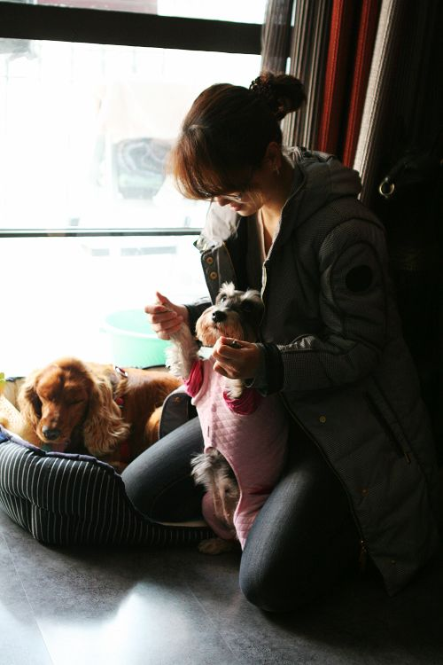

过冬 @ Nov 19, 2009
常常口水哒哒地问人家：“你家最近烧什么好吃的？”冬天一到，胃口便好起来。周末在家吃了两天羊肉肥牛火锅，下班又跑去超市采购。
茴鱼烧老豆腐，鸡爪炖排骨汤，以及超市买回的什锦菜。只有在春节的时候家人才有时间去炒什锦菜，十样蔬菜分别清炒，然后拌一起放上调料，清爽可口。如今超市的“绿柳居”就有现成的什锦菜售卖，省了摘菜洗菜切菜的麻烦。
最近一直在看卫视播的《媳妇的眼泪》，假兮兮的剧情，三番五次跳湖自杀，总是被救起，相爱的人在琼瑶阿姨的笔下受尽折磨。。。并且。。。那些冗长的穿插其中的可恶的广告。。。再可爱的明显脸总在节骨眼上蹦出来挤眉弄眼，一样招人厌。。。放着一柜子的电影不看，就是这么没有智商的连续剧看得津津有味？看完泡个热水澡贴个面膜再睡下，睡眠时间由过去的6小时延长到9小时。从每日换衣的病态中解脱出来，一件衣服可以穿个三两日，但还是怀疑缺少一件全羊毛。。。100%羊毛。。。真正的纯羊毛衫。。。以及，不在工作中自寻烦恼，顺其自然，让自己活得更象个女人，有温弱也有建立在本质上的那份独立。吃吃喝喝暖暖和和过冬，却想到回国三周还没将礼物送给朋友们呢！
有时觉得土豆长得象一只小猴子：）

10 Responses to “过冬”
2009-11-19
呵呵！
2009-11-19
可怜的土豆，都“被直立行走”了，能不象猴子吗:+)
2009-11-19
耷拉着脑袋的LUKE…..
2009-11-19
看你宠土豆的样子，LUKE都不忍心看下去了:)
2009-11-19
LUKE，上我家来好吗？
2009-11-19
为什么不给小luke 穿点衣服呢，呵呵
2009-11-19
恭喜入微。
我这几日在准备一场考不过的考试。考完哈，礼物心里默默地早就收下拉。哈哈
2009-11-19
Luke在打哈欠好不好，其实最让人操心的是土豆啊，怎么可能冷落luke呢。它有天然的毛衣不需要再穿衣服了~呵呵~
2009-11-20
啊??又养了一个啊??
2009-12-08
新欢上镜率刚刚高一些就敏感起来了。。还是情人总是老的好的年代吗？话说当旧爱已经变成亲情。。。
Leave A Reply
存档只读，评论已关闭。